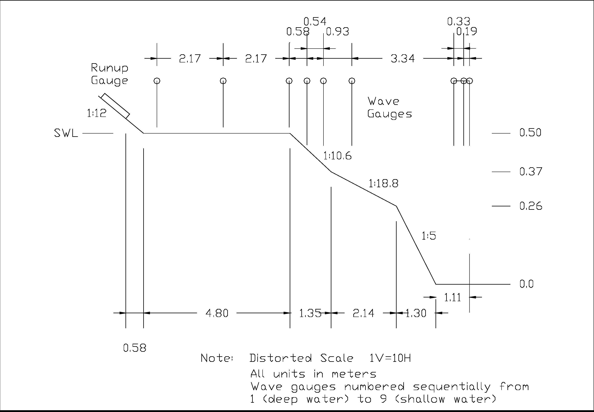

Eksperimen dibagi menjadi 3 bagian. Eksperimen pertama dilakukan hanya menggunakan variabel gelombang, dengan kecepatan angin 0. Eksperimen kedua, dilakukan hanya menggunakan variabel angin. Selanjutnya eksperimen ketiga adalah gabungan dari perubahan variable gelombang dan variabel angin.
<#3712#>Gambar<#3712#>:
<#3714#>Instrumen eksperimen yang digunakan oleh Demirbilek et al (#DemirbilekReport###).<#3714#>

|
Gambar #fig:intrumen_demirbilek#714> merupakan konfigurasi yang digunakan Demirbilek et al (#DemirbilekReport###) untuk mengamati gelombang. Pada konfigurasi tersebut ada 9 sensor gelombang, 2 sensor kecepatan angin, dan 1 sensor runup gelombang. Wilayah penyebaran sensor gelombang dikelompokan menjadi 2. Wilayah pertama berada di atas karang dan wilayah kedua berada di laut. Wilayah karang merupakan gabungan dari wilayah karang yang datar Reef Flat dan wilayah karang yang miring. Wilayah karang datar memiliki panjang mulai dari SWL hingga 4.8 meter ke arah laut. Wilayah karang yang miring Reef Slope di mulai dari bibir karang datar hingga 4.79 meter ke arah laut. Laut didefinisikan dengan wilayah dengan dasar terdalam. Untuk sensor 1, 2, dan 3 tersebar di wilayah laut, sensor 4, 5, dan 6 tersebar di wilayah reef slope, dan untuk sensor 7, 8, dan 9 tersebar di wilayah reef flat.